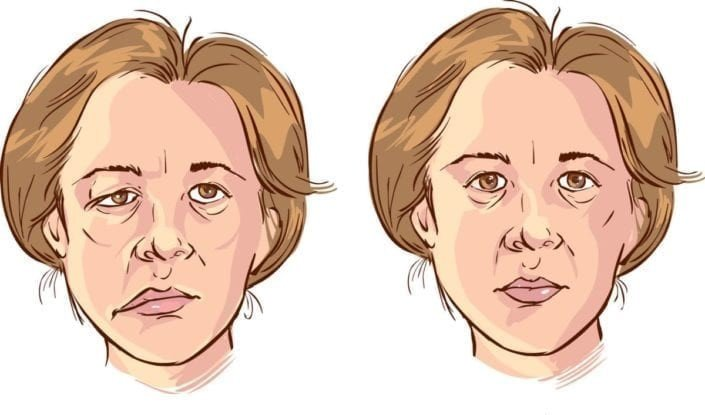

Liệt Dây Thần Kinh Số VII Ngoại Biên
Liệt dây thần kinh số VII ngoại biên là bệnh lý gây ra các ảnh hưởng đến các sinh hoạt ăn uống bình thường của người bệnh. Đặc biệt nó còn gây mất thẩm mỹ trên khuôn mặt người bệnh. Do đó vấn đề điều trị bệnh lý này rất được quan tâm. Phương pháp châm cứu chữa liệt dây thần kinh số 7 trong đông y được sử dụng để điều trị tình trạng này, hiệu quả phục hồi rất cao. Dưới đây là một vài thông tin về vấn đề này mời mọi người cùng xem qua để hiểu rõ hơn.
1. Liệt dây thần kinh số VII là bệnh gì?
Liệt dây thần kinh số VII ngoại biên là tình trạng mất vận động một phần hoặc toàn bộ các cơ một bên mặt. Bệnh lý này khởi phát cấp tính (trong vòng 72h), được gây ra bởi sự tổn thương dây thần kinh sọ VII hay còn được gọi là dây thần kinh mặt (đoạn từ nhân não trở xuống).
Biểu hiện của liệt dây thần kinh VII ngoại biên
2. Nguyên nhân
Liệt dây thần kinh số VII ngoại biên hay còn được gọi là liệt Bell (Facial palsy/ Bell’s palsy) nguyên nhân gây bệnh là vô căn (80%), tuy nhiên bệnh cũng có thể khởi phát do nhiều nguyên nhân khác.
Theo Y học hiện đại
Có 3 nguyên nhân gây nên tình trạng này:
Do lạnh
- Nó làm phù nề tổ chức ở trong xương đá, chèn ép dây thần kinh VII gây liệt. Nếu tình trạng chèn ép lâu ngày sẽ để lại di chứng.
- Nó làm co mạch gây thiểu năng tuần hoàn tại chỗ, không nuôi dưỡng được dây thần kinh gây liệt mặt.
Do nhiễm trùng
Các bệnh lý viêm nhiễm sau có thể gây nên tình trạng liệt dây thần kinh VII ngoại biên.
- Viêm xương đá: Biểu hiện ù tai, nghe kém, chóng mặt, đau đầu, sốt nhẹ.
- Viêm tai giữa: Sốt, chảy mủ tai.
- Viêm tai xương chũm: Đỏ, sưng vùng xương chũm, ấn đau.
- Viêm tuyến mang tai: Má sưng to, hay gặp trong quai bị.
- Zona: Là bệnh lý do siêu vi trùng có ái tính với tế bào thần kinh ở hạch gối và hạch Gass gây liệt. Biểu hiện nổi những mụn nước trong ở ống tai ngoài, mi mắt, miệng bên liệt. Thường ngứa rát, tồn tại 1- 3 ngày thì vỡ, có vảy ít.
Do chấn thương
- Ngã, đánh làm vỡ xương đá, xương chủm chèn ép vào dây VII gây liệt.
- Mổ viêm tại xương chủm làm đứt dây VII, sưng phù nề chèn ép dây VII.
- Ung thư vòm họng, khối u chèn ép.
Theo Y học cổ truyền
Có 3 nguyên nhân gây nên bệnh lý này:
Do phong hàn (do lạnh)
- Đây là nguyên nhân thường gặp nhất, và thường xảy ra vào mùa Đông Xuân.
- Bệnh do phong hàn xâm phạm vào lạc mạch của 3 kinh dương ở mặt làm cho sự lưu thông của kinh khí không bình thường, khí huyết không điều hòa, kinh cân thiếu dinh dưỡng không co lại được gây nên.
Do phong nhiệt
- Tương ứng với thể liệt dây thần kinh VII ngoại biên do nhiễm trùng của y học hiện đại (viêm tai giữa, viêm tai xương chủm…).
- Y học cổ truyền gọi là trúng phong nhiệt ở kinh lạc, làm khí huyết không điều hòa gây liệt.
Do huyết ứ
- Tương ứng với thể liệt dây thần kinh VII ngoại biên do sang chấn; do trật đã huyết, tức là do sang chấn gây huyết ứ, dẫn đến bế tắc kinh lạc gây liệt.
3. Chẩn đoán
Hiện nay không có một tiêu chuẩn thống nhất nào để sử dụng chẩn đoán liệt Bell. Chẩn đoán liệt Bell thường dựa trên bệnh sử, triệu chứng, các dấu hiệu, và bằng cách chẩn đoán loại trừ các nguyên nhân khác có thể gây liệt mặt ngoại biên.
Triệu chứng và dấu hiệu
Thông thường, liệt Bell chỉ ảnh hưởng một bên mặt, tuy nhiên, trong một số ít trường hợp, nó có thể ảnh hưởng cả 2 bên mặt. Bệnh nhân có thể cảm thấy khô mắt và miệng, hoặc ra nước mắt quá nhiều, ù tai, mất vị giác 2/3 trước lưỡi, ứ đọng thức ăn bên phía miệng bị ảnh hưởng. Yếu nhẹ hoặc yếu rõ hay liệt cơ mặt có thể được chú ý đến.
Trạng thái tĩnh: Mờ hoặc mất các nếp nhăn, mất cân xứng lông mày, mờ hoặc mất rãnh mũi má, mi mắt và khóe miệng rũ xuống.
Trạng thái động: Yếu nhẹ đến không vận động được trán và mi mắt, nhắm kín hai mắt thấy không đối xứng, hoặc không có khả năng nhắm kín mắt bên liệt, yếu nhẹ đến không có khả năng di chuyển góc miệng hay mất đối xứng rõ rệt khi hoạt động cơ mặt.
Phản xạ: Mất phản xạ giác mạc.
Cận lâm sàng
- Xét nghiệm máu có thể phát hiện được các nguyên nhân gây liệt mặt ngoại biên như viêm tai giữa, viêm xương chũm, viêm mê đạo tai, viêm tuyến mang tai, u tuyến mang tai, hoặc bệnh Lyme.
- Xét nghiệm dịch não tủy có thể loại trừ hội chứng Guillain-Barre
- CT và MRI có thể loại trừ bệnh nhiễm trùng, khối u, nứt gãy xương hoặc những nguyên nhân khác.
4. Tác dụng của châm cứu trong điều trị liệt dây thần kinh số 7
Nhiều công trình nghiên cứu đã cho thấy rằng châm cứu chữa liệt dây thần kinh số 7 có hiệu quả điều trị rất cao đối với bệnh lý này. Tình trạng liệt cơ mặt được cải thiện, phục hồi gần như hoàn toàn. Không những giúp cho người bệnh sinh hoạt ăn uống được bình thường mà còn cải thiện vấn đề thẩm mỹ trên khuôn mặt.
4.1. Cách châm cứu chữa liệt dây thần kinh số 7 (VII)
Nhiều cách châm cứu điều trị liệt VII ngoại biên
Dựa vào thăm khám và điều trị của bác sĩ, mà tùy theo từng thể bệnh, nguyên nhân, giai đoạn bệnh và thể trạng của cá nhân người bệnh mà có các phác đồ điều trị khác nhau.
4.4.1. Châm cứu chữa liệt dây thần kinh số 7 giai đoạn cấp
Chọn huyệt
Huyệt chính- Bên bị ảnh hưởng: Địa thương, Giáp xa, Dương bạch, Hạ quan.
- Cả hai bên: Hợp cốc.
Huyệt chọn dựa trên thể bệnh- Thể phong hàn: Phong trì, Liệt khuyết.
- Thể phong nhiệt: Phong trì, Ngoại quan, Đại chùy, Khúc trì.
Huyệt chọn dựa trên triệu chứng- Đau đầu: Thái dương.
- Khó nhăn trán và cau mày: Toản trúc, Ty trúc không.
- Khó nhắm mắt: Tình minh, Đồng tử liều, Ngự yêu.
- Mờ rãnh mũi má: Nghinh hương.
- Lệch rãnh nhân trung: Thủy câu (Nhân trung).
- Lệch rãnh cằm môi: Thừa tương.
- Mất khả năng cười: Cự liêu.
- Ù tai và điếc tai: Thính hội.
- Đau vùng xương chũm: Ế phong, Đầu hoàn cốt.
Thao tác
- Hào châm
Sử dụng hào kim dài 1 – 1,5 thốn. Sau khi sát trùng, châm kim nhanh và về kim đến khi đắc khí. Mỗi 10 phút về kim 1 lần, về từ 10 – 15 giây, một lần châm lưu kim khoảng 30 phút. Đè chặt vào lỗ kim sau khi rút kim để tránh chảy máu.- Hào châm kết hợp với cứu
Với thể phong hàn, cứu khoảng 5 phút cùng lúc cả hai huyệt Hợp cốc ngay sau khi rút kim cho đến khi da hơi đỏ.Liệu trình điều trị
Một liệu trình 5 ngày, mỗi ngày 1 lần, nghỉ ngơi 2 ngày để tiếp tục liệu trình tiếp theo.4.4.2. Châm cứu chữa liệt dây thần kinh số VII giai đoạn bán cấp
Chọn huyệt
- Huyệt chính
Bên bị ảnh hưởng: Địa thương, Giáp xa, Dương bạch, Hạ quan, Ê phong, Khiên chính. Cả hai bên: Hợp cốc.- Huyệt chọn dựa trên thể bệnh
Thể phong hàn: Phong trì, Liệt khuyết. Thể phong nhiệt: Phong trì, Ngoại quan, Đại chùy, Khúc trì.- Huyệt chọn dựa trên triệu chứng
Đau đầu: Phong trì. Mắt nhắm không kín: Tình minh, Đồng tử liêu, Ngư yêu. Đau vùng xương chủm: Đầu hoàn cốt, Ngoại quan. Các triệu chứng khác điều trị giống giai đoạn cấp.Thao tác
- Hào châm
Điều trị giống như giai đoạn cấp.- Điện châm
Sau khi đắc khí, bắt điện 2-3 cặp huyệt. Sử dụng sóng nhanh chậm hoặc sóng ngắt quãng. Tăng cường độ điện mạnh cho đến khi thấy cơ mặt cử động. Cho bệnh nhân vận động cơ mặt trong 5 phút rồi nghỉ ngơi. Kích thích điện trong 30 phút mỗi lần châm.- Điều trị kết hợp
Hào châm kết hợp với cứu: Trong thế phong hàn, cứu khoảng 5 phút cùng lúc cả hai huyệt Hợp cốc ngay sau khi rút kim cho đến khi da hơi đỏ. Hào châm kết hợp với massage mặt: Sau khi rút kim, áp dụng massage thư giãn cơ mặt khoảng 10 phút mỗi lần, một lần mỗi ngày. Điện châm kết hợp với chiếu đèn hồng ngoại: Trong khi điện châm, sử dụng đèn hồng ngoại chiếu cách xa khoảng 30-40cm với nhiệt độ thích hợp ở vùng mặt và vùng sau tai bên bị ảnh hưởng khoảng 15 phút, dùng mỗi ngày một lần.Liệu trình điều trị
Một liệu trình 5 ngày, mỗi ngày 1 lần, nghỉ ngơi 2 ngày để tiếp tục liệu trình tiếp theo.4.4.3. Châm cứu chữa liệt dây thần kinh số 7 giai đoạn hồi phục
Chọn huyệt
- Huyệt chính
Bên bị ảnh hưởng: Địa thương, Giáp xa, Dương bạch, Ngư yêu, Hạ quan. Cả hai bên: Hợp cốc.- Huyệt chọn dựa trên thể bệnh
Đàm huyết ứ trở kinh lạc: Túc tâm lý, Phong long. Khí hư huyết ứ: Quan nguyên, Khí hải, Huyết hải. Âm hư phong động: Thái khê, Chiếu hải, Thái xung.Thao tác
- Hào châm
Sử dụng hào kim dài 1-2 thốn. Sau khi sát trùng, châm kim nhanh theo cặp từ Địa thường xuyên Giáp xa, Dương bạch xuyên Ngư yêu. Những huyệt khác châm như bình thường. Về kim cho đến khi đắc khí. Mỗi 10 phút về kim 1 lần, về từ 10 – 15 giây, một lần châm lưu kim khoảng 30 phút. Đè chặt vào lỗ kim sau khi rút kim để tránh chảy máu.- Điện châm
Sau khi đắc khí, bắt điện 2 – 3 cặp huyệt, ví dụ, Địa thương với Giáp xa, Quan nguyên với Khí hải. Sử dụng sóng nhanh chậm hoặc sóng ngắt quãng. Cường độ điện trong khả năng chịu đựng của bệnh nhân. Kích thích điện trong 20 phút mỗi lần châm. Còn Hợp cốc hai bên nên lưu kim thêm 10 phút sau khi điện châm.- Điều trị kết hợp
Hào châm kết hợp với cứu: Điều trị giống giai đoạn bán cấp. Hào châm kết hợp với massage mặt: Điều trị giống giai đoạn bán cấp. Hào châm kết hợp với chiếu đèn hồng ngoại: Điều trị giống như giai đoạn bán cấp. Điện châm kết hợp với mồi ngải: Sau khi điện châm, sử dụng mồi ngải kích cỡ bằng hạt lúa mì để cứu trên vùng mặt, 3 mồi cứu cho mỗi huyệt, mỗi ngày làm một lần.Liệu trình điều trị
Một liệu trình 5 ngày, mỗi ngày 1 lần, nghỉ ngơi 2 ngày để tiếp tục liệu trình tiếp theo.4.4.4. Châm cứu chữa liệt dây thần kinh số VII giai đoạn di chứng
Chọn huyệt
- Huyệt chính
Bên bị ảnh hưởng: Địa thương, Giáp xa, Đầu duy, Huyền ly, Thần đình, Hàm yến, Thái dương, Dương bạch, Quyền liêu. Cả hai bên: Hợp cốc, Túc tam lý.- Huyệt chọn dựa trên thể bệnh
Điều trị giống giai đoạn hồi phục.Thao tác
- Hào châm
Sử dụng hào kim dài 2 thốn. Sau khi sát trùng, châm kim nhanh theo cặp từ Địa thường xuyên Giáp xa, Đầu duy Xuyên Huyền ly, Thần đình xuyên Hàm yến. Những huyệt khác châm như bình thường. Về kim cho đến khi đắc khí.- Điện châm
Sau khi đắc khí, bắt điện 2-3 cặp huyệt. Sử dụng sóng nhanh với cường độ điện trong khả năng chịu đựng của bệnh nhân trong vòng 20 phút.Liệu trình điều trị
Một liệu trình 15 ngày, mỗi ngày 1 lần, nghỉ ngơi 3 ngày để tiếp tục liệu trình tiếp theo.4.2. Lưu ý khi lựa chọn châm cứu chữa liệt dây thần kinh số VII
Nếu thao tác quá nhiều hoặc kích thích điện có thể gây ra co giật cơ mắt như một di chứng. Các dây thần kinh mặt nằm sát bề mặt và nên châm vào phần nông . Không nên vê kim nhiều để tránh bị kích thích quá mức .
Điều trị không đúng cách, đặc biệt kích thích mạnh và kéo dài có thể gây ra di chứng khó chữa, dẫn đến co giật mắt hoặc các cơ quanh mắt, thậm chí là nhược cơ đặc trưng là khó mở mắt.
Tình trạng bệnh lý có thể trở nên tồi tệ hơn sau lần điều trị đầu tiên. Điều này phù hợp với giai đoạn tiến triển của bệnh. Tuy nhiên, với việc tiếp tục điều trị, tình trạng sẽ không trở nên tồi tệ hơn mà sẽ giảm dần. Điều này nên giải thích cho bệnh nhân trong tuần điều trị đầu tiên.
Khi châm kim
- Cần phải lưu ý hướng kim và độ sâu cần châm. Tránh châm mạnh và diện tích rộng ở vùng mặt, giảm tối đa các biến chứng.
- Trong giai đoạn cấp, đòi hỏi phải châm nông, châm xiên, và không được sử dụng thao tác mạnh trên vùng mặt.
Điện châm
Tránh chỉnh điện cao đột ngột vì nó làm có mạnh cơ đột ngột và làm tổn thương thần kinh, làm cong kim, gãy kim, ngất do châm,… Cường độ điện châm nên trong giới hạn chịu được, nếu không sẽ gây co thắt cơ.
Chiếu đèn hồng ngoại
Đèn hồng ngoại có thể áp dụng phía mặt bị ảnh hưởng với khoảng cách 30 – 40cm, cường độ từ 250 – 300W, thời gian khoảng 15 phút. Bảo bệnh nhân nhắm mắt và giúp họ bằng cách dùng gạc để bảo vệ. Cảm giác ấm vừa đủ. Lau mồ hôi sau khi chiếu đèn hồng ngoại xong.
5. Những phương pháp đông y khác chữa liệt dây thần kinh số VII
- Với các thể bệnh dùng các bài thuốc phù hợp.
- Kết hợp xoa bóp, bấm huyệt hỗ trợ chữa các triệu chứng của liệt dây thần kinh số VII.
- Có thể kết hợp với thực dưỡng, tập dưỡng sinh để nâng cao thể trạng…